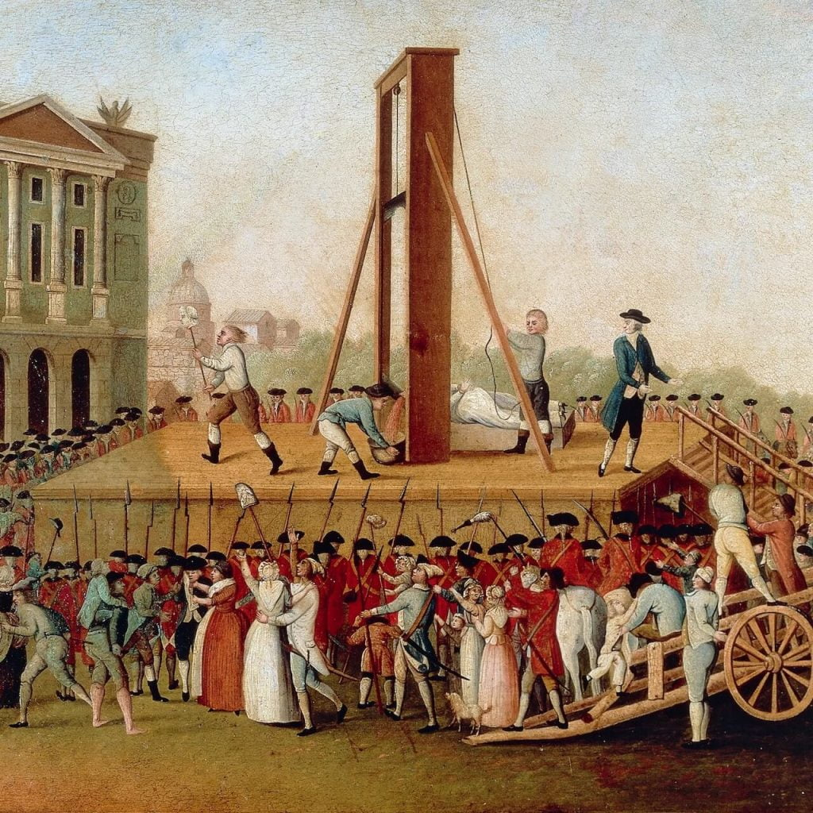

ဂယ်လတင်(guillotin) ခေါင်းဖြတ်စက် ကိုသုံးပြီး ပြင်သစ် တော်လှန်ရေး တလျှေက် လူထောင်ပေါင်း များစွာ သတ်ခဲ့ ပါတယ်။ ဒီထဲမှာ ပြင်သစ် ဘုရင် လူဝီ နဲ့ ဘုရင်မ တို့လည်း ပါပါတယ်။ အလားတူ ခေါင်းဖြတ် စက်တွေကို ဂျာမနီ၊ ပါးရှား၊ စကော့တလန် နဲ့ အီတလီ ပြည်တို့မှာ ရှေးအတော်ကြာ ထဲက သုံးခဲ့တယ် လို့ ဆိုပါတယ်။
ထူးဆန်းတာက ဒီ ခေါင်းဖြတ်စက် ကို Guillotin ထွင်ခဲ့တာမဟုတ်ပါ။ Guillotin ဟာ ပြင်သစ် တော်လှန်ရေး အဖွဲ့ဝင် တစ်ယောက် ဖြစ်ပြီး သေဒဏ် ပယ်ဖျက်ရေး အုပ်စုဝင် တစ်ယောက် လည်းဖြစ် ပါတယ်။ သေဒဏ် မပယ်ဖျက် နိုင်မှီ နာကျင်မှု အနည်ဆုံး (swift and painless) နည်းနဲ့ စီရင်ဖို့ Guillotin ကအဖွဲ့ အစည်းကို အကြံပြု ခဲ့ပါတယ်။
ပြင်သစ် တော်လှန်ရေး အဖွဲ့က Guillotin ရဲ့ အကြံပြု ချက်ကို လက်ခံပြီး ၁၇၉၁ ခုနှစ်မှာ ဂျာမန် လူမျိုး ပညာရှင် Tobias Schmidt ဆိုသူကို ပြင်သစ် ဖရန့်ငွေ ၉၆၀ ပေးပြီး နမူနာ ခေါင်းဖြတ်စက် တစ်လုံး လုပ်ခိုင်း ခဲ့ပါတယ်။
ရှေးဦစွာ သိုး၊ နွားပေါက်၊ လူသေကောင် တို့နဲ့ စမ်းသတ်ကြ ပါတယ်။ ၁၇၉၂ ခုနှစ် ဧပြီလ ၂၅ ရက်နေ့မှာ Nicolas Jacques Pelletie အမည်ရှိ ဒါပြ တစ်ဦး ကို ဒီခေါင်းဖြတ် စက်နဲ့ ပထမဆုံးသေဒဏ် ပေးခဲ့ ပါတယ်။
မူလက ခေါင်းဖြတ်စက် ကို Louisette လို့ခေါ်ခဲ့ ကြပြီး နောက်ပိုင်းမှာ la gallotine လို့ လူအများက ခေါ်ကြ ရာကနေ ပြင်သစ်က ခေါင်းဖြတ်စက် တွေကို “ဂယ်လတင်” လို့ခေါ် ခဲ့ကြ ပါတယ်။
ပြင်သစ်မှာ ဂယ်လိုတင် ခေါင်းဖြတ်စက်နဲ့ လူလယ်ကောင်မှာ နောက်ဆုံး သေဒါဏ် အပေးခံရသူကတော့ ယူဂျင်း ဝေမန် ဖြစ်ပြီး ၁၉၃၉ ခုနှစ် ဇွန်လ ၁၇ ရက်နေ့မှာ ကွပ်မြက် ခံခဲ့ ရတာပါ။
ဂယ်လိုတင် စက်နဲ့ နောက်ဆုံး ကွပ်မျက်ခံရ သူကတော့ Hamida Djandoubi ဖြစ်ပြီး သူ့ကို ၁၉၇၇ ခုနှစ် စက်တင်ဘာ ၁၀ ရက်နေ့ တွင် Marseilles မြို့မှာ သေဒဏ် ပေးခဲ့ခြင်း ဖြစ်ပါတယ်။
